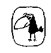

Metis Yayınları İpek Sokak No.9,80060 Beyoğlu, İstanbul
MİNİM A MORALİ A Sakatlanmış Yaşamdan Yansımalar Theodor W. Adorno
Özgün Adı: Minima Moralia Reflexionen aus dem beschâdigten Leben
© Suhrkamp Verlag, Frankfurt/M., 1951 ©Metis Yayınlan, 1997
Birinci Basım: Ekim 1998 İkinci Basım: Mart 2000
Die Herausgabe dieses Werkes wurde aus Mitteln von Inter Nationes, Bonn, gefördert.
Bu eser Inter Nationes'in (Bonn) katkılarıyla yayımlanmıştır.
Yayına Hazırlayanlar: Garo Antikacıoğlu, Müge Gürsoy Sökmen
Kapak Resmi: "Die Geschichte vom fliegenden Robert" adlı Alman masalının resmi. (Der Struwwelpeter''den alınmıştır; Esslinger Verlag, 1998 basımı)
Kapak Tasarımı: Semih Sökmen Dizgi ve Baskı Öncesi Hazırlık: Sedat Ateş Kapak ve İç Baskı: Yaylacık Matbaacılık Ltd. Cilt: Sistem Mücellithanesi
ISBN 975-342-207-5
